How to Build a PC
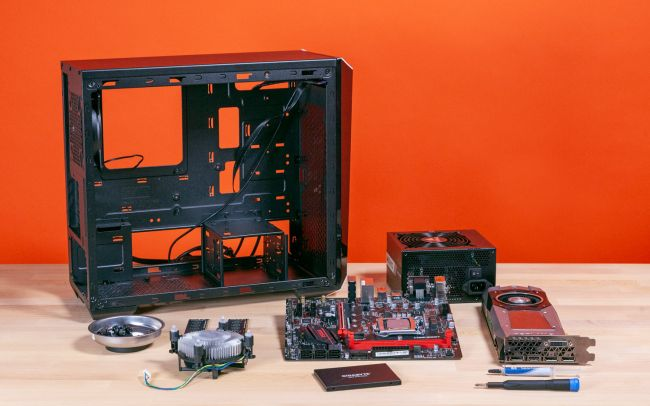There are plenty of great pre-built PCs on the market, but there’s nothing quite like the satisfaction of using one that you create yourself. While the process of assembling a computer isn’t difficult, it’s daunting the first time you do it. For those embarking on their first build, we’ve put together a step-by-step guide to building a PC.
Before we start, know that this is a guide exclusively dedicated to assembly. That means you’ll need to pick out your parts first. Our list of recommended cases, CPUs,GPUs, motherboards, SSDs, power supplies and RAM, along with our buying guides can help you choose key components.
The other thing to know is that no two builds are identical. The order we’re going in here is based partly on preference and also based on the needs of the build. For instance, if you have a large aftermarket cooler that blocks the DIMM slots, you may have to go in a different order than we did, or backtrack and pull out a part here or there to to make room for a particularly bulky part or cramped case. More advanced options like liquid cooling and RGB lighting, as well as high-end CPU platforms like Intel's Core X and AMD's Threadripper also aren’t covered in this guide.
Be Prepared
Before you start building a PC, you need to get your workspace ready. Make sure that you have all of your parts and tools at the ready. At the very least, you’ll want:
1. Phillips-head screwdrivers (#1 and #2 should do the trick)
2. Zip ties and/or twist ties for cable management
3. Flashlight (it can get dark in the corners of a PC case))
4. Thermal paste (although stock coolers usually have this pre-applied)
5. Something to hold your screws
6. Band-aids (just in case)
Some builders swear by anti-static equipment, including mats or wrist straps. But as long as you don’t live in a particularly dry environment, you’re not building on a metal surface (opt for wood or plastic) and you aren't rubbing your socks on a carpet while building, you should be able to avoid shorting out your PC or parts. Of course, there’s nothing wrong with playing things safe. So if you’re worried about static, take the appropriate precautions.
Connect Components to the Motherboard
While some prefer to mount the motherboard in the case before they do anything else, it’s easier with many builds to connect key components like the CPU and the RAM, without leaning over inside the chassis.
CPU
Whether you’re going with an Intel or and AMD build, the first step is to release the tension lever on the CPU so that you can drop the processor into the socket. (The big difference here is that on Intel builds the pins are on the socket while in AMD’s case, the pins are on the CPU.)
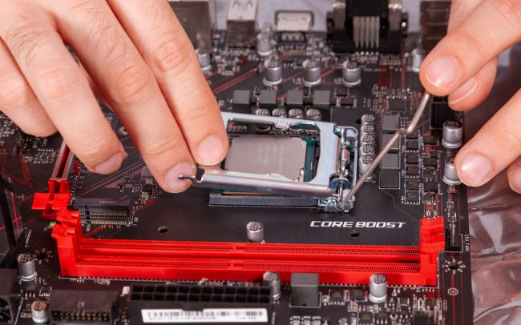The arrow/triangle on the top of the CPU needs to line up with one on the socket or the socket cover. Don’t attempt to install a CPU with the arrow facing the wrong direction, or you could damage your chip, your board, or both! Once your CPU and socket are properly aligned, you can drop the chip in place, and it will settle into the socket under its own weight. If it doesn't, pick up the CPU and re-seat it. Don't force the processor into the socket or you'll almost certainly damage something. Once you've got the CPU settled correctly in the socket, press the tension lever back down (on Intel motherboards like the one in the image above, this will also include a metal plate that holds the CPU in).
Note that the above instructions pertain to the mainstream platforms for AMD (the AM4 socket) and Intel (socket LGA 1151). Enthusiast platforms like Intel’s Core X (LGA 2066/R4) and AMD’s Threadripper (TR4) have different/more complex CPU installations, with the Intel chips involving two levers and Threadripper requiring Torx screws and a slide-in plastic bracket. The Threadripper CPU install process in particular is tricky and, given the price of chips and X399 motherboards, we would not recommend Threadripper as your first PC build platform.
Once the cooler is installed, plug the fan connector into its header on the motherboard. This is usually somewhere close to the CPU socket and labeled something like "CPU_FAN."
Cooler
Many processors come with coolers in the box. If you’re not doing any heavy overclocking, those may be good enough, though lots of builders also like to buy more powerful (and often quieter) aftermarket coolers, which may also just be more attractive.
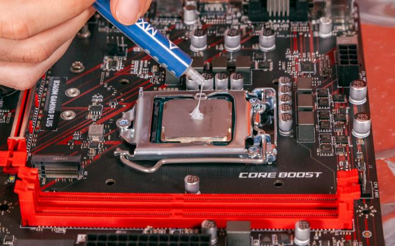If you decide to use the stock cooler, you'll find that it already has thermal paste applied. With aftermarket coolers, you’ll generally need to apply your own thermal paste. You don’t need much--just a pea-sized amount applied to the center of the CPU will spread when you put the cooler on. Again, serious overclockers and PC build veterans will have techniques for evenly spreading thermal compound. But for novice builders and those not looking to achieve the maximum possible overclock speeds, dropping a small amount in the center and letting the CPU cooler spread the thermal paste works just fine. Just make sure you don't add too much paste; you definitely don't want it squirting out the sides onto the socket and surrounding PCB.
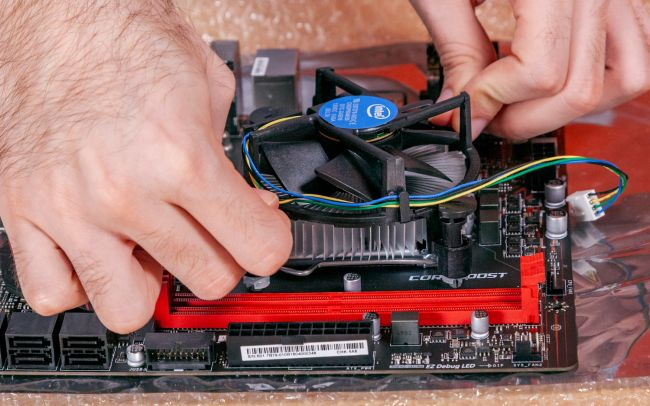Stock coolers for Intel processors use push pins that go through holes in the motherboard. We recommend pushing opposite corners in to evenly spread the thermal paste, and to keep from putting uneven pressure on one side of the CPU. AMD stock coolers have metal arms that snap into notches on a plastic bracket on either side of the socket. Aftermarket coolers mount in various ways, so be sure to consult the instruction manual, as mounting aftermarket coolers can be surprisingly complicated, often involving a large backplate that has to be mounted behind the motherboard.
Memory
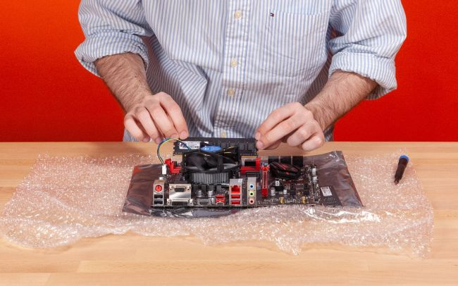Installing RAM is a snap--literally. First, make sure that the latches for each memory slot are open. Some boards have latches on both sides of a RAM slot, while others--often budget boards--have a latch on one side, with the other end fixed in place. Once your latches are opened, look at each DIMM and position it over the slot such that the small divot on the bottom of the RAM stick is aligned with the matching bump on the board. Finally, push down on the DIMM on each edge until it snaps into place, causing the latches to close on their own. The process requires a bit of force, but if you’re having trouble, make sure that you’re not putting the module in backwards.
If you’re installing two RAM sticks in a board that has four slots, check the motherboard manual to make sure you’re installing your DIMMs in the right slots. If you put them in the wrong slots you may not get the best performance possible, or one of the sticks may not be recognized by the motherboard/operating system.
M.2 SSD
If you’re using an M.2 SSD, now is as good a time as any to install it, because later on other parts may get in the way.
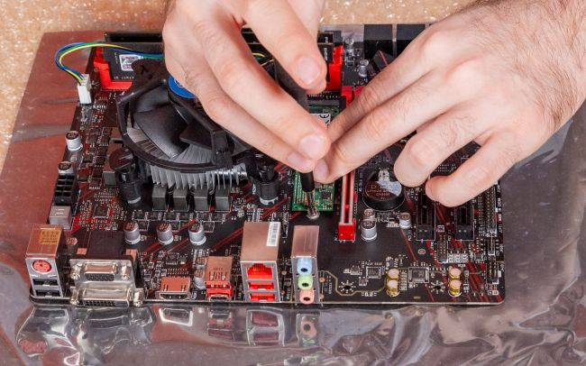If it’s already installed, remove the screw located across from the M.2 slot and slide the SSD in at an angle. Make sure the notch lines up with the slot, similar to RAM installation. If the notch doesn’t line up, your drive may not be compatible with that slot. Slowly lay the SSD flat and secure the mounting screw. This tiny screw is easy to drop, which is another reason to install M.2 drives before putting your motherboard into the case.
Putting the Motherboard in the Case
Now that we’ve built the core platform (minus the graphics card, which we’ll do later), we’re going to install the CPU and RAM-equipped motherboard in the case. If you haven’t yet, remove the side panels on your chassis. Most cases have thumb screws holding their panels in place, which makes it easy to remove them.
Standoffs
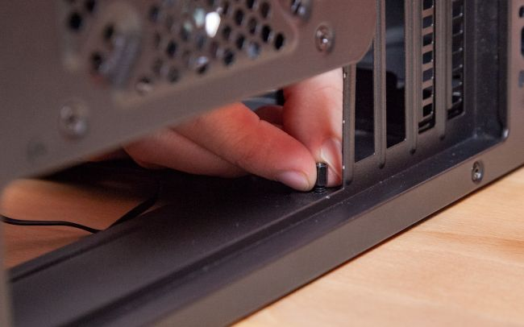First, gather the standoffs that came with your case and find the proper place to install them. They’re likely marked on the case based on the size of the motherboard you chose. Many cases have standoffs preinstalled, so you may be able to skip this step. If standoffs are preinstalled in the wrong spot for your motherboard, you can use needle nose pliers to get them out.
I/O Shield
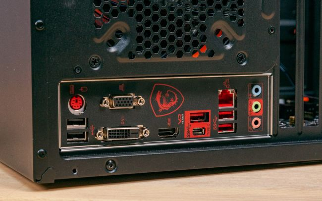The I/O shield, which covers the area around your rear ports, comes with your motherboard. You’ll need to fit the shield into the chassis before you install the motherboard itself, making sure it's the right-side up so that your motherboard ports will fit through the holes once both are installed. You’ll have to use some force to snap all four corners into place. Be careful of sharp edges (that’s why you have the band-aids) as well as metal bits that can block the ports--especially if you have a budget motherboard.
The exception are some premium boards, which ship with this shield pre-attached, but you won't find that on most boards.
The Motherboard
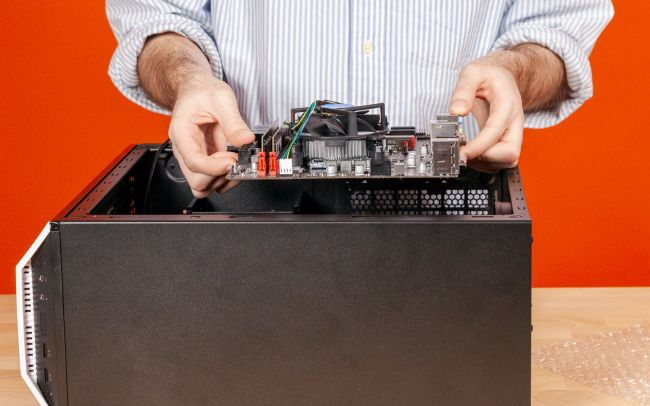Now, it’s time to put the motherboard in. Make sure the holes on the motherboard line up with the standoffs you installed and that the ports line up with the cutouts on the I/O shield. Once the board is in, put the screws into the standoffs to anchor the motherboard in place.
Adding the Power Supply and Traditional/SATA Storage
Now for a few parts that aren’t attached directly to the motherboard.
Power Supply
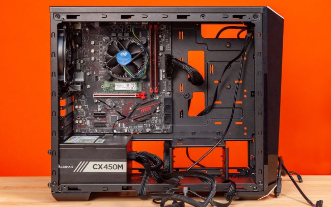The PSU is usually mounted to the back at the case. Sometimes you’ll find it at the top, but it’s usually mounted at the bottom, where it can pull in cool air from under the chassis. Once you put it in place, it’s generally as simple as screwing it into place with four screws at the back of the case. Then, plug in the 24-pin power connector and supplemental/CPU power connector into the motherboard.
SATA Storage
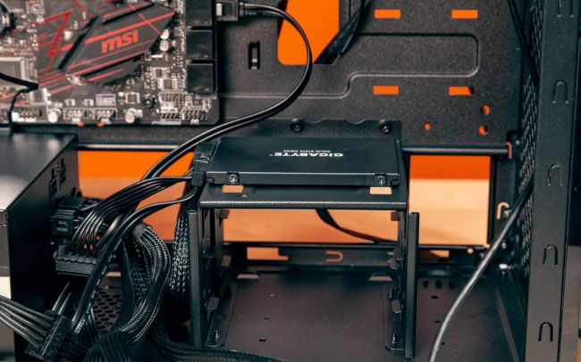We added M.2 storage earlier, so now it’s time for SATA drives, which could be a 2.5 inch SSD or hard drive, or a traditional 3.5-inch hard drive. Connect the SATA data cable to the motherboard and your drive or drives, then connect the SATA power connector from the PSU to your drive(s). Mount the hard drive or SSD in the appropriate bracket and screw or snap it into place. Note that bracket/drive mounting methods and placement vary by chassis model.
Inserting the Graphics Card
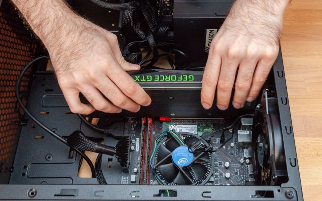This is an optional step. If you’re using an Intel or AMD CPU with integrated graphics and don’t plan on serious gaming, you may not need or want a discrete graphics card. Many AMD CPUs, as well as high-end Intel models, don’t have on-board graphics, though, and will require a graphics card in order to connect and output to your monitor.
To install the GPU, you'll likely have to remove some slot covers on the back of the case, so that the HDMI, DVI and other ports show through, letting you can connect your monitor(s) later.
Connect the GPU into the PCIe X16 slot on the motherboard (it’s the long one, and you’ll want to use the topmost one if there’s more than one on your motherbaord). If necessary, plug the PCIe power connectors from the power supply into the card. (You may not need to do this on lower-end cards).
Add a Wi-Fi Card (if necessary)
Most motherboards come with an Ethernet port on them and many also have Wi-Fi built-in. However, if you need wireless access and your computer doesn’t come with a Wi-Fi card, you’ll need to install one in one of the PCIe slots, a short M.2 slot, or attach a USB Wi-Fi dongle. If you’re gaming, an Ethernet connection is probably your best bet for reliable connectivity.
The Last of the Cable Connections
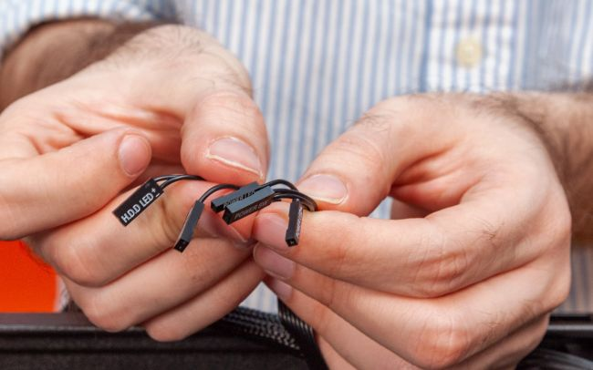OK, just a few more cables to go until we try turning the PC on. Make sure the connectors for any fans are plugged into the motherboard fan headers. Then, attach the front-panel audio cable, USB 2.0 and USB 3.0 case connectors to those headers. You’ll want to consult your motherboard manual for this, because their location varies by motherboard model.
Lastly, there are the tiny front-panel connectors, including power, reset, HDD activity light, etc. Those need to go to the appropriate pins on the motherboard (usually in the bottom-right corner if your motherboard is mounted in the traditional orientation. You’ll need to consult your motherboard manual to see where each should go, as this also can differ based on board make and model.
Double check that you’re using the right headers. These things are small (and so are their labels), so it’s easy to mess them up if you’re not paying close attention.
Turn the Computer On
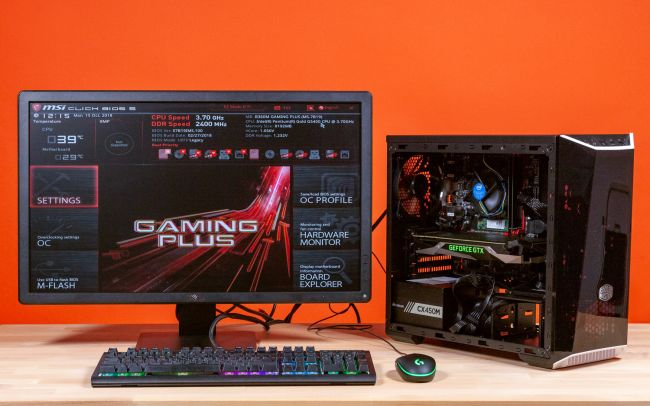Once all that's done, it's a good idea to double check to make sure there are no extra fan headers or power cables still waiting to be routed to the right connector. Then plug the PC in, plug in and connect your monitor (to one of the ports on the graphics card, if you've installed on) and your keyboard and mouse.
Hit the power button on your monitor, then turn the power supply switch on (on the back of the power supply) and then press your PC's power button. If everything is working, the PC should turn on and run its POST (power-on self test). Since your operating system isn’t installed yet, you may get an error message about a missing boot drive, or you may get sent straight to the UEFI/BIOS.
Cable Management
This is where you make your case pretty and ensure better air flow. We’re doing this after we know that the system boots properly, because we’d hate to tear apart all of the careful wiring and cut a bunch of zip ties just to have to re-seat a component or reroute a cable. You could of course install your operating system before this step. And clean cable routing is of course less important if you don’t have a case with a window. But we like things neat and pretty, so it’s time to shut the system down, unplug the power cable and clean things up.
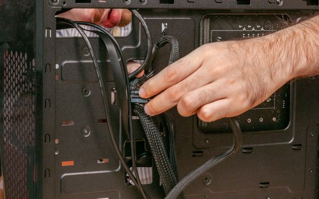Routing some cables through the back of the case during the build process is a good first step toward a clean build. But this is where we’ll shove any extra cable slack through the back panel, break out the zip ties to neaten things up and then, put the side panels back on. You could spend hours making your cable routing as perfect as possible. But just spending 15 minutes making an effort to clean up your cables can make a huge visual difference in what your final build looks like.
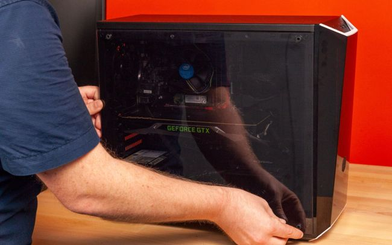Install an Operating System, Drivers and Updates
Preferably before the build process, you'll want to make a USB install drive for either Windows 10 or the Linux build of your choice. For Windows 10, simply navigate to Microsoft’s Download page and click the “Download Tool Now” button. You’ll download and run the Media Creation tool which will turn any 8GB or larger USB drive into a Windows install disk. If you don’t already have a Windows 10 key, you can get one cheap or for free. If you have a problem with the OS, you can try to reset Windows 10 to factory settings.
Plug the USB drive into your new computer, power on and you should boot into your operating system installer, which will step you through the process. If the system doesn’t access your drive, you may need to navigate to the BIOS and make sure your USB key is available as a boot device and that it's placed in the boot order before your internal drive or drives.
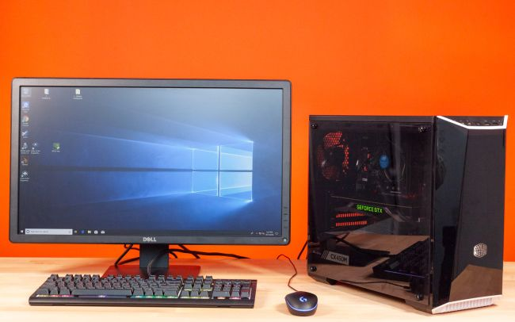Once you've installed your operating system, when you first connect to the internet, Windows 10 is pretty good these days at getting device drivers. However, you should still go to the manufacturers’ product pages for your parts to make sure you have or get the latest updates.
Finally, when your OS and drivers are all updated, it’s time to start using your PC! The one that you built. Install some games, stream some movies, edit some photo or video, chat on Discord--whatever it is you like to do with your PC. And remember: Whenever you’re ready to add more features or performance, you can always upgrade.